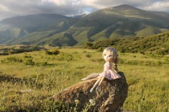

Вы шуміце, шуміце нада мною бярозы,Калышыце, люляйце свой напеў векавы,А я лягу-прылягу край гасцінца старога,Hа духмяным пракосе, недаспелай травы.
Я слишком долго спала,Я слишком долго ждала.Только сейчас я смоглаПросто себе разрешить,Просто познать эту суть,Просто пройти этот путь,
tu pana gropana mi na smo tupana mina sela
si la scangroteri dapu scro santari dampin sela
Манарч байгаа шилийг
Маргааш яаж туулна даа
Магадын хайртай түүнийгээ
Мартагнуулж байгаад ойртуулна даа хө
Мэлийж байгаа шилийг.
Сколько песен,Сколько света,Сколько красок!..Ну, зачем так много мне одной?Моё сердце распахнулось настежь,

поиска хё
Ничего никому не сказав,Ты уйдешь далеко-далеко.Я тебя отыщу по следам, по словам,Что текут непослушной рекой...Постой!...
Видеть тебя всегдаХочется мне сейчас,Мысли твои читатьВ каждом движенье глаз,А ещё иногдаСлышать дыханье так,
Между небом и землёй,Где никто нас не найдёт,Поцелую я тебя,Если очень повезёт!Через горы и моряЯ всю землю обойду.
Зун нь дуусаагүй хайрЗургаан сарын тэнгэрЗөөлөн борооны үнэрЧиний дэргэд сэрэх бүрд минь үнэртээдЧамдаа зохиосон хайр
Τι είν' αυτό που το λένε αγάπηΤι είν' αυτό τι είν' αυτόΠου κρυφά τισ καρδιέσ οδηγείΚι όποιοσ το 'νιωσε το νοσταλγεί
Хай як холодно було тогорічІ каміном стала духова пічО дванадцятій в цю нічМиру просить кожен з нас.Хай як холодно було тогоріч
А на озері лотос квітне, квітне,Ти – моє бажання заповітнеА на озері лотос рожевіє,Від твого кохання шаленію.Від твого кохання шаленію.
На афинских бульварах,
На пирейских причалах,
Где сердца молодые всегда горячи,
От влюбленных слыхали
Молодые гречанки
Не слышны в саду даже шорохи,
Всё здесь замерло до утра.
Eсли б знали вы, как мне дороги
Подмосковные вечера.
I guess you wonder where I've beenI searched to find the love withinI came back to let you knowGot a thing for youAnd I can't let go
Орон дэлхэйн жаргал эдлэн байхадааОлон ушар зүйлнүүд харагдаа намдаҮнэншье байха, худалшье байхаБаяр гуниг hэлгэн ерэн ошон байха
La-la-la-la!La-la-la-la!Hey, hey, hey! Ya samara!La-la-la-la!La-la-la-la!Hey, hey, hey! Ya samara!
Changes in my life,I want be few behind.Changes in my life,You will see in time.Changes in my life,You're always in my mind.
Открывай скорее, школа,Дверь для нас.Пусть звенит звонок весёлыйХоть сейчас.